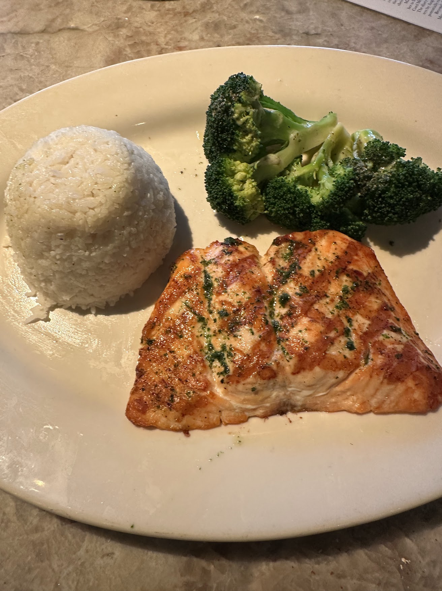

Salmon on a bed of pasta is my favorite meal in the world (Figure 1).
Figure 1: My dream meal
Salmon on a bed of rice is for some reason the thing that I eat more frequently. My standard dinner is salmon with Costco stir-fry vegetables (frozen) sometimes with a cup of rice (Figure 2). (A dietician recently told me this is too much salmon/mercury.)
Figure 2: My typical meal
A Restaurant Incident
Because I eat salmon multiple times a week, I tend to go for other items at restaurants. Two major exceptions:

Figure 3: Cheesecake Factory
The Cheesecake Factory makes an excellent salmon (albeit farmed, Figure 3)
Fish restaurants often have special kinds of salmon
In 2021, I went to a fish restaurant in the Chicago suburbs. I had previously eaten there pre-COVID and was excited for the large portions. Prices had gone up from the tremendous pre-COVID value, but still seemed reasonable.
As of August 2024, the prices are the following. All include a “14-16 oz portion, homemade roasted vegetables, and wild rice”.
Scottish Salmon: $32.99
Wild Alaskan Salmon: $37.99
New Zealand Organic Salmon: $39.99
Considering that these types of salmon would generally cost $15-30/lb in a supermarket, this still seems like a solid deal.
Wild Salmon Interlude via Claude
Species
Quality
Farmed/Wild
Important Characteristics
Chinook (King)
High
Mostly wild
Largest salmon; rich, fatty flesh; high in omega-3s
Coho (Silver)
Good
Mostly wild
Milder flavor; firm texture; popular for grilling
Sockeye (Red)
High
Mostly wild
Deep red color; strong flavor; high in omega-3s
Pink (Humpback)
Lower
Mostly wild
Lightest color and flavor; often canned
Chum (Dog)
Lower
Mostly wild
Pale flesh; milder flavor; often smoked or canned
Atlantic
Good
Mostly farmed
Mild flavor; adaptable to farming; controversial due to environmental concerns
Kokanee
Good
Wild
Landlocked Sockeye; smaller size; popular for fishing
Some additional important points:
Wild salmon generally have better flavor and nutritional profiles compared to farmed salmon, but they’re often more expensive.
Farming practices vary widely, affecting quality and environmental impact. Some farms are working on more sustainable practices.
Salmon quality can vary based on the specific run and location, even within the same species.
Conservation status is a concern for some wild salmon populations, particularly in certain regions.
The taste and texture of salmon can be influenced by their diet and the waters they inhabit.
King salmon has limited farming, mainly in New Zealand and very small operations elsewhere.
While a little odd that a fish restaurant wouldn’t be more specific about the type of its “Wild Alaskan Salmon”, I proceeded to order that dish.
Size Problems
When it arrived, it looked like Figure 4 (sides not shown):
Figure 4: Restaurant salmon portion
By standard restaurant serving sizes, this would be perfectly acceptable, but the menu claimed 14-16 oz. As a frequent salmon consumer, I knew this was wrong.
I had also previously eaten there and the meal looked like Figure 5. A much healthier size!
Figure 5: Previous restaurant salmon portion
I mentioned the size issue to the food runner who escalated the matter to the waiter. The waiter told me that this was in fact the correct size. I said no I don’t think so and he said yes and then left without resolving the issue.
Unsatisfied, I again brought it up and he then said that it must have shrunk a bit from the cooking.
Cooked vs. Uncooked Weight Interlude
Apparently the restaurant norm is to advertise the uncooked weight of food, e.g. a quarter pounder hamburger will be a quarter pound (4 oz) frozen and closer to 3 oz cooked.
Size Specifics
In the case of salmon, Claude claims that we should expect a weight loss of “15-25%”. Given this, let’s look at some estimates for the size of fish that we could expect.
Largest without shrinkage: A 16 oz piece
Largest with shrinkage: Start with a 16 oz piece, with 15% shrinkage:
Resulting size \(= 16*0.85 = 13.6\) oz
Average with shrinkage: Start with a 15 oz piece, with 20% shrinkage: \(\text{Resulting Size} = 15*0.8 = 12 \text{oz}\)
Smallest with shrinkage: Start with a 14 oz piece, with 25% shrinkage: \(\text{Resulting Size} = 14*0.75 = 10.5 \text{oz}\)
Hmm, so technically even a 10.5 oz piece would have been in the acceptable range. Admittedly, I think I would have complained about approximately anything <12 oz, but this size seemed even smaller.
After a brief and polite conversation raising my previous time at this restaurant and my deep general salmon experience, I insisted that we go to the kitchen to solve this the right way: on the scale (Figure 6).
Figure 6: Salmon on the scale
After weighing the plate with the salmon and a separate empty plate, we concluded that the salmon size was about 9 oz!
Recall from above that we have 10.5 oz as the minimum size, 12 oz as the average size, and 15 oz as the average size without any shrinkage. This means this was too small by: